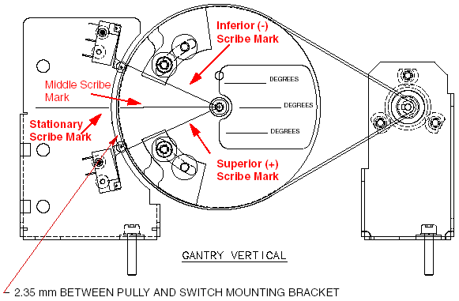
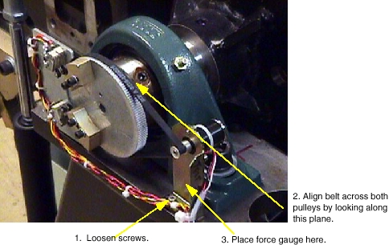
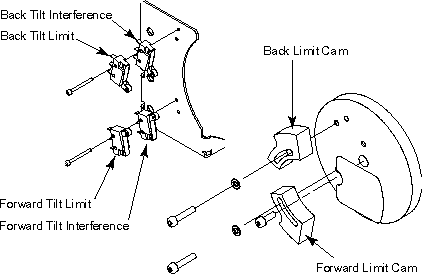

Operating Documentation
Direction 5114043-800, Rev# 9
LightSpeed 3.X Service Methods (Advanced)
Operating Documentation |
| Required Persons | Preliminary Reqs | Procedure | Finalization |
|---|---|---|---|
| 1 |
Tilt angle accuracy is achieved by using potentiometer feedback and three reference points. Characterization is performed by reading the potentiometer voltage feedback at each of these three points. This method creates a slope characterization file that is accurate, independent of the gantry leveling procedure performed during installation. (See the installation manual for details on gantry leveling.) For this reason, unique precise tilt angle values are written on the tilt label for your system. Reference Illustration 1. This method allows manufacturing to measure and record precise tilt angle values using an inclinometer. The manufacturing process first takes a relative reading creating an offset, and then absolute readings are used with offset correction. The result is actual tilt angles during normal system operation.
| Item | Qty | Effectivity | Part# | Manufacturer | |
|---|---|---|---|---|---|
| Standard FE Toolkit | ` | - | - | - | |
| Force Gauge that measures in the 1 to 8 ounce range. | 1 | - | - | - | |
| Do not attempt to adjust the 150 tooth pulley. This is factory set. Disturbing this pulley will result in invalid tilt label values and inaccurate application tilt anlges. Care should also be used to prevent damaging the legibility of the tilt label. | |
The tilt pot is a 5 turn, 5k ohm potentiometer. The adjustment of this potentiometer can be confusing. The procedure is based upon a relative tilt value as opposed to an absolute or real value. It is very important that this procedure be followed carefully.
| Do not use the gantry display to determine tilt angle.You must use the scribe marks on the 150 tooth pulley to set correct title angle for potentiometer adjustment. | |
Tilt gantry to middle reference position. Refer to Illustration 1.
Illustration 1: Tilt Pot Adjustment Diagram

For coarse adjustment, loosen tilt pot mounting bracket and relieve tension on the timing belt.
Connect DVM minus lead to CCW (center post) of the potentiometer and DVM plus to S (closest outside post) of the potentiometer.
Rotate small pulley until the DVM reads 5 vdc.
Restore belt tension with the tilt pot mounting bracket and secure.
For final adjustment, loosen tilt pot clamps and rotate the body of the pot until the DVM reads 5.0 ± 0.1 vdc.
Tighten pot clamps and verify DVM reading.
Refer to Illustration 2 for the following steps:
Loosen both screws holding the Tilt Pot Bracket.
Ensure that the belt's edge is parallel to the Large Pulley.
Tension the belt by applying a force of 0.56 N (.1258 lbs, 57.1 grams) to the Tilt Pot Bracket.
While the belt is in tension, torque the two screws to 7.9 Nm (68.97 in.-lbs).
Illustration 2: Tilt Pot Belt Tension Adjustment

| NOTE: | Although CT Engineering has indicated a “recommended” tension of 57.1 grams as optimal, the exact amount of force is not critical to proper system function. Measurement methods for this can be as specific as the use of a force gauge, or as general as a light tug, using one finger. |
Tool suggestions:
Locally acquired Force Gauge that measures in the 1 to 8 ounce range.
Example: Economy Linear Tension & Compression Gauge 8 oz X 220 G Cap, 0.25 oz X 5 G Grad, 14" Lg $69.11 Each (Part #2115T11), available from McMaster-Carr Supply Company.
One finger with light force applied to the bracket.
Tilt limit and interference is sensed using micro-switches to provide feedback in a faulted state. These switches are not activated during normal operation. Firmware control stops tilt motion prior to these switches being activated. A faulted state will prevent further tilt motion in that direction. Tilt is functional in the opposite direction to clear the faulted state.
Tilt interference limits are minus (-) 22.00 degrees and plus (+) 19.00 degrees.
The interference matrix is dependent upon table elevation and cradle position.
Tilt limits are ± 30.00 degrees.
Launch Tilt Characterization: [SERVICE DESKTOP] > [SYSTEM INTEGRATION] > [CHARACTERIZATION] > [TILT CHARACTERIZATION]
| Do not accept and save any values during this procedure. You will corrupt your tilt characterization. This program disables firmware control and allows the user to tilt the gantry under hardware control to actuate the switches for adjustment and verification purposes. | |
Elevate the table slightly above middle height. Press and hold the limits
pushbutton. Verify that S22 and I22 alternate on the gantry display tilt window.
Adjust elevation height as necessary.
limits
pushbutton. Verify that S22 and I22 alternate on the gantry display tilt window.
Adjust elevation height as necessary.
Release limit pushbutton and tilt gantry back to minus (-) 22.50 degrees. This will be seen on the gantry display cradle window.
Remove Back Limit Cam and adjust Back Interference Cam to actuate the Back Tilt Interference Switch. (Use a DVM set to DC volts to monitor the switch activation). See Illustration 3.
Illustration 3: Tilt Limit/Interference Cam Adjustment

Tilt gantry forward and then back again. Verify the tilt stops between minus (-) 22.50 and minus (-) 22.60 degrees as shown on the gantry display cradle window.
Tilt gantry forward to plus (+) 19.50 degrees as shown on the gantry display cradle window.
Remove the Forward Limit Cam and adjust the Forward Interference Cam position to just actuate the Forward Tilt Interference Switch. (Use a DVM set to DC volts to monitor the switch activation). Reference Illustration 3.
Tilt gantry back and then forward again. Verify the tilt stops between plus (+) 19.50 and plus (+) 19.60 degrees as shown on the gantry display cradle window.
Elevate the table to maximum height. Press and hold the limits
pushbutton. Verify that S30 and I30 alternate on the gantry display tilt window.
Tilt gantry forward to plus (+) 30.25 degrees as shown on the gantry display cradle window.
Install the Forward Limit Cam and adjust position to just actuate the Forward Tilt Limit Switch. (Use a DVM set to DC volts to monitor the switch activation). Refer to Illustration 3.
Tilt gantry back and then forward. Verify the tilt stops between plus (+) 30.25 and plus (+) 30.35 degrees as shown on the gantry display cradle window.
Tilt gantry back to minus (-) 30.25 degrees.
Install Back Limit Cam and adjust to actuate Back Tilt Limit switch. (Use a DVM set to DC volts to monitor the switch activation). Refer to Illustration 3.
Tilt gantry forward and then back again. Verify the tilt stops between minus (-) 30.25 and minus (-) 30.35 degrees as shown on the gantry display cradle window.
Tilt the Gantry through both Forward and Backward tilt range. Verify the gantry stops at both angles as specified above.
Proceed through the Tilt Characterization screens and exit WITHOUT SAVING. It is not necessary to tilt the gantry as instructed. Ignore all reported values.
Exercise the tilt function under firmware control, and verify that the Interference and Limit Switches are not activated during normal operation. Use the DVM as above for each switch. Notice the gantry display will show tilt with 1 decimal point in the tilt window.